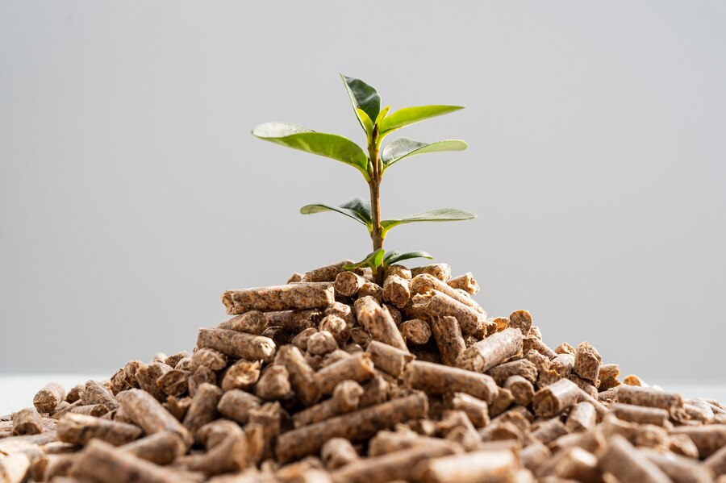
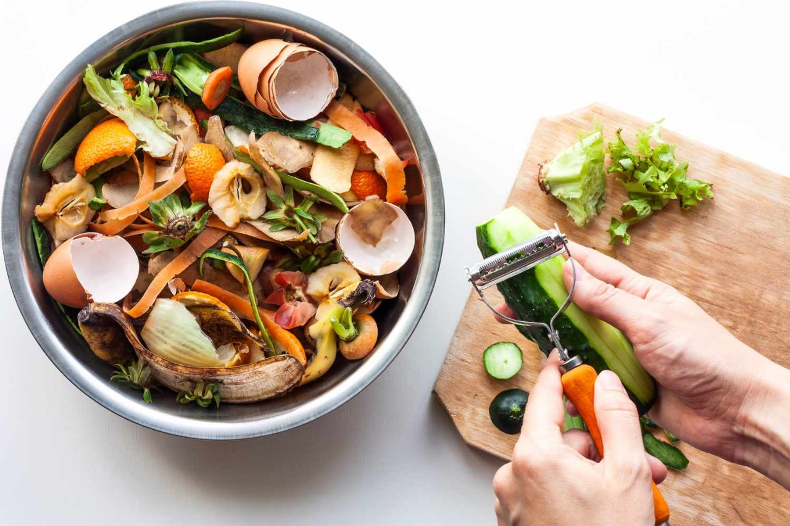
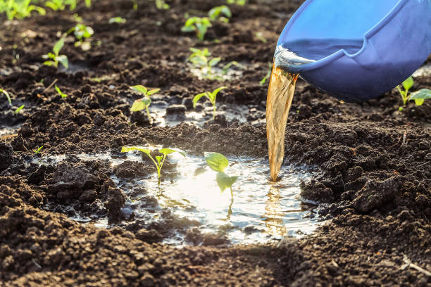

NPK Fertilizer
Balanced nutrition for strong overall plant growth and predictable results.
GrowWell is a simple farming companion that helps you compare fertilizer types, match them to the crop and soil you have, and learn from a community focused on practical, real-world growing advice.
These are the three main fertilizer paths the project already covers, now presented more clearly.
Balanced nutrition for strong overall plant growth and predictable results.

Slower, soil-friendly feeding that supports long-term health and structure.

Simple at-home options for gardeners who want to reuse natural materials.

Fast uptake support when plants need a quicker nutritional boost.
The original site had the right idea, but the layout was flat and the script was not wired into the pages. This version keeps your original content while making it feel complete and usable.
Headings, cards, and actions are easier to scan on desktop and mobile.
One stylesheet now handles all pages, so the project feels consistent.
Login and fertilizer matching now work through actual form handling.
A more polished version of your old frontend, still lightweight and easy to run locally.
Fertilizer categories shown on the landing page.
Core sections across home, matching, and community.
The pages now include a live footer year.